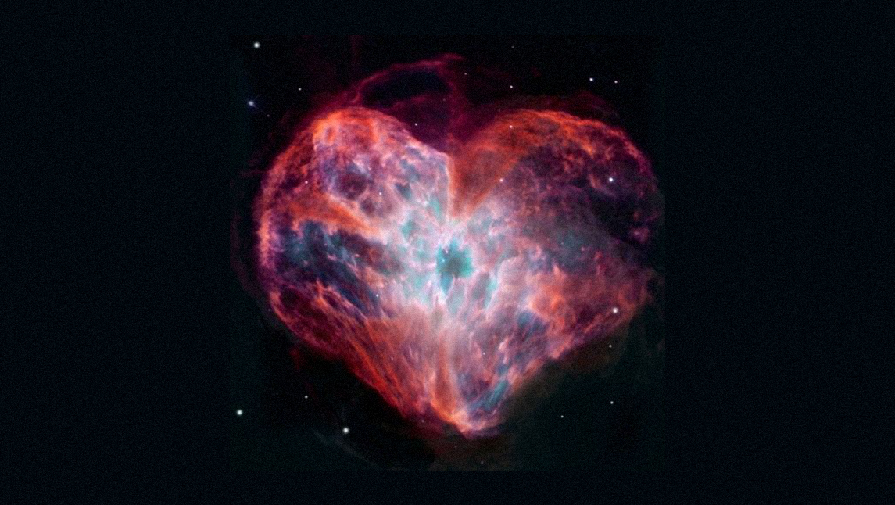

El diminuto espacio del corazón es un espacio situado en el corazón físico, a la altura del centro del pecho. Metafóricamente -y quizás no tanto-, se trata de un portal que cada uno tiene disponible para entrar al corazón de Dios. En él, Tiempo y Espacio no funcionan intuitivamente. El Tiempo es uno solo: el presente. Y el Espacio es holográfico, lo que significa que habitando este portal “propio” se habita la totalidad. Un parte refleja el Todo, como indica el principio metafísico.
Desde la mirada de la física, el diminuto espacio del corazón es el fragmento fractal-holográfico del Vacío Cuántico que todo lo atraviesa, y es omnipresente, omnipotente y que todo lo sabe (entiéndanse estos atributos del Vacío Cuántico como los mismos que los asignados a Dios).
En este momento histórico, presenciamos una transición sin precedentes en la historia escrita. Me refiero a profundas transformaciones en nuestro ADN y cuerpo físico, cuerpo mental y emocional, en nuestros sistemas de organizaciones sociales, políticos y económicos, en nuestra ciencia y tecnología, y en la forma de entender la salud y los abordajes para tratarla. Desde una perspectiva álmica, ya hemos atravesado evoluciones de este estilo. Es decir, presenciamos un proceso evolutivo profundo, y nuestro horizonte de sucesos de realidad se expande aceleradamente. No sé qué tan ingenuo sea el lector, pero nada que valga realmente la pena es gratis en el Universo.
Esto quiere decir que posiblemente todo lo que vaya a cambiar tenga que colapsar previamente. Y esto, sin dudas, no será una “ascensión angelical a quinta dimensión”. A los escenarios que experimentamos en los últimos tres años y a una lectura de la situación actual del mundo (más o menos honesta) me remito.
La buena nueva: el diminuto espacio del corazón es eterno y permanente. Sin importar lo que suceda ahí fuera, nunca se perderá conexión con la Divinidad. Desarrolle su propia conexión y diálogo con ella. Será necesario.